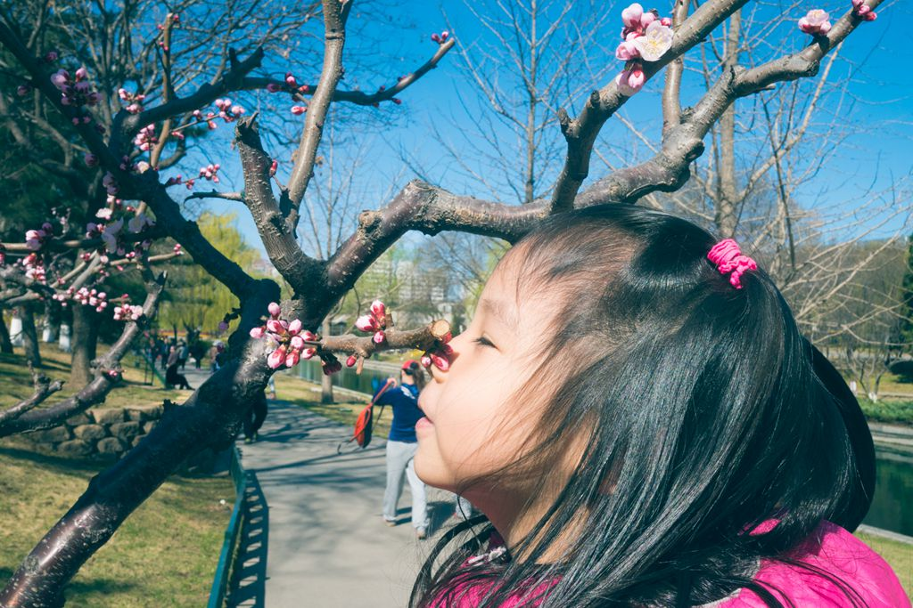
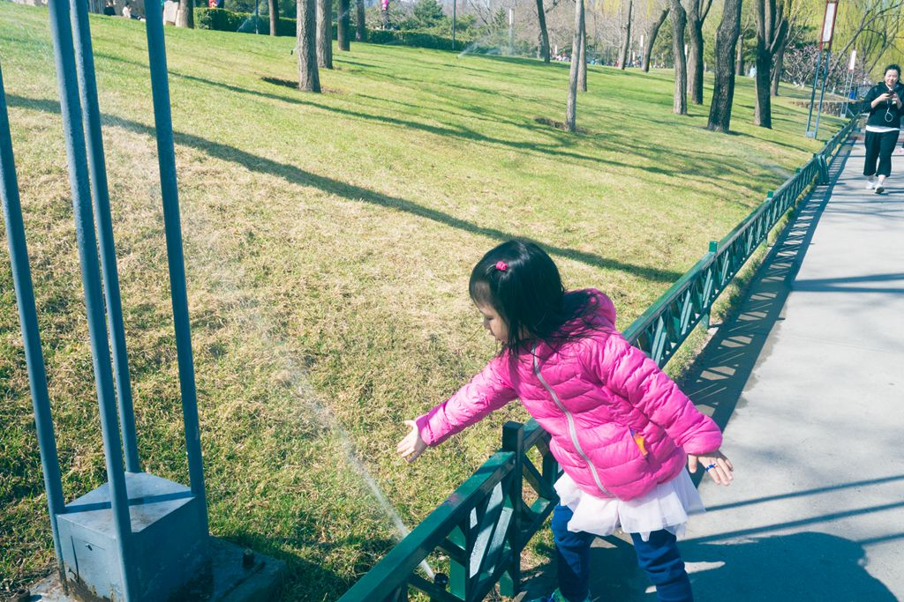
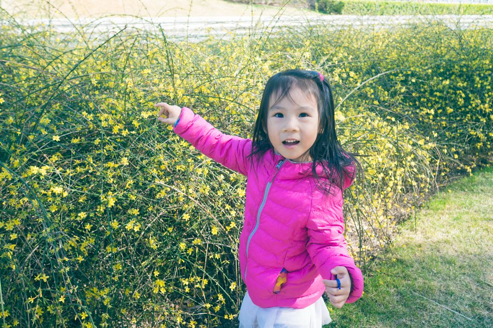
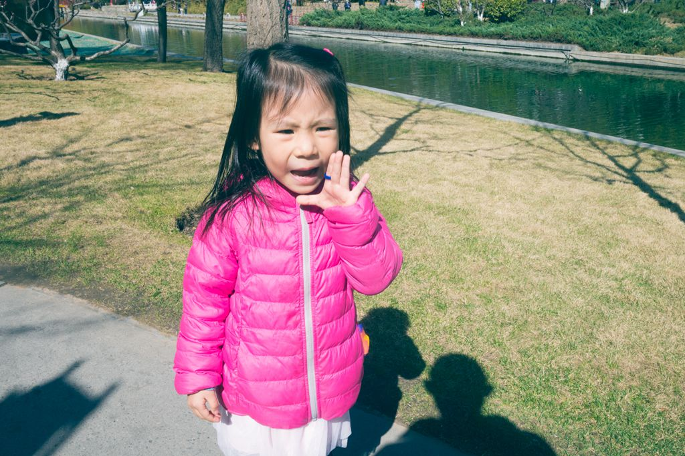

又是一年的春天来到了，在喵妈住院的一周，气温迅速就攀升到20度了。周围的柳树着急地抽芽，小区的迎春也抓紧绽放，路边大朵大朵的玉兰更是沁人心脾。
天气暖和了，喵也开始了更多的户外活动，大病初愈的喵妈也一起晒晒太阳。
一进公园，就看到含苞待放的桃花，喵很幸福地闻了闻，马上就下地开始跑了。

跑着跑着，地上出现一大滩水，原来是旁边草坪上喷灌器在喷水，用手试试，劲儿好大啊。

继续向前跑，一大片迎春花，指着小花，合个影吧。

还要前进，大声的呼唤爸爸：“跑啊”。
最后，来到了一个小广场，喵立刻找到了广场的台阶，于是开始了最近发明的新游戏。
喵：“我当老师，你们当小兔子，好吗？”
我们：“好啊。”
于是喵让我们站在台阶上，她噔噔噔跑上来，说道：“你们等一下，我去给你们拿被子。”
噔噔噔跑下去，找一个小墙角，小手在空中假装敲键盘，一转身，假装很吃力地抱着大被子，又跑了上来。
气喘吁吁地说：“我送小兔子来了，这是她的被褥，我下午接她。”
于是我们就笑着配合着她这“混乱”的逻辑。
这样，她一会儿当幼儿园老师，一会儿当家长，如此往复地跑了大概30遍，竟然一点都不累。
在我们苦劝之下，终于答应往回走了。
正当我们夸奖她体力真好的时候，忽然听见身后一个声音幽幽地说着：“我走不动了，爸爸高高”，于是只好高高着走到自行车那里。
中午到家，着实饱饱地吃了一大碗饭菜，睡了个大觉。
好好运动，好好吃饭，好好睡觉，这个春天也是你抽芽、绽放、沁人心脾的时节。
下一篇写写喵每天早上的幼儿园之路。